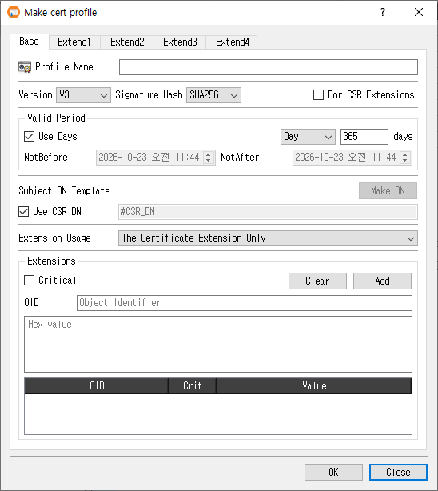

Make Certificate Profile Dialog Guide
This guide explains the Make cert profile dialog. Open it from Tools > Make Cert Profile. A database connection is required. The dialog creates reusable certificate profiles; existing profiles can also be edited, copied, or viewed from the Profile Manager.

Create a profile
- On the Base tab, enter a Profile Name.
- Choose whether the profile is for a certificate or for CSR Extensions.
- For a certificate profile, configure the version, signature hash, validity period, subject DN template, and extension usage.
- Use the Extend1 through Extend4 tabs to configure the extensions needed by certificates or CSRs. Each extension has its own controls; select Critical when that extension should be marked critical.
- Click OK to save the profile. Click Close to exit without saving.
The profile name is required. For certificate profiles, a subject DN template is also required unless Use CSR DN is selected. On success, CertMan saves the profile and its configured extensions, refreshes the Certificate Profile list, and displays Certificate profile created.
Base tab
| Field or control | Purpose |
|---|---|
| Profile Name | Required name for the profile. |
| Version | Certificate version. This control is disabled for a profile marked For CSR Extensions. |
| Signature Hash | Default signature digest used by the profile where applicable. Disabled for CSR extension profiles. |
| For CSR Extensions | Creates a profile intended for CSR extensions. Certificate-specific controls such as version, validity, subject DN, and extension usage are disabled. |
| Valid Period | For certificate profiles, choose either a relative duration or explicit dates. |
| Use Days | When selected, specify a duration and unit (Day, Month, or Year). New profiles default to 365 days. |
| NotBefore / NotAfter | When Use Days is cleared, set explicit start and end date/time values. |
| Subject DN Template | Subject name template used for certificates. Click Make DN to compose a DN. |
| Use CSR DN | Use the subject DN from the certificate request. When selected, the DN template field is disabled. |
| Extension Usage | Choose where extensions are used: certificate only, CSR only, or both with an order preference. |
| Extensions | Add custom extensions by entering an OID and hexadecimal value. Use Critical to mark the custom extension critical; Add inserts it into the table and Clear removes table entries. |
For a new certificate profile, CertMan defaults to V3, the configured default hash, Use CSR DN, and a 365-day validity period. The extension usage default is The Certificate Extension Only.
Extension tabs
The four extension tabs group the supported X.509 extensions. Enter the required values in an extension's controls, then use Add to add table-based values. Clear removes table entries where available. Criticality is configured separately for each extension group.
| Tab | Extension groups |
|---|---|
| Extend1 | Key Usage, Certificate Policies, Subject Key Identifier (SKI), and Authority Key Identifier (AKI). |
| Extend2 | Extended Key Usage (EKU), CRL Distribution Points (CRLDP), and Authority Information Access (AIA). |
| Extend3 | Basic Constraints, Subject Alternative Name (SAN), and Issuer Alternative Name (IAN). |
| Extend4 | Policy Constraints, Policy Mappings, and Name Constraints. |
Common value types include usage selections, OIDs, URIs, and typed alternative names. Some groups provide additional fields such as CA/path length, policy counters, or name-constraint distances. Configure only the extensions required by your certificate or request policy.
Edit, copy, and view
- Edit loads the saved profile and its extensions. The profile type cannot be changed while editing.
- Copy loads an existing profile's settings with
_Copyappended to its name, allowing you to save a separate profile. - View opens the profile in read-only mode.
Notes
- Certificate and CSR extension profiles share the extension tabs, but the CSR profile type disables certificate-specific base settings.
- Explicit validity dates are checked to ensure the NotBefore value is not too early. Choose appropriate validity values for your certificate policy.
- Profile extension contents are stored with the profile in the connected database.
Related implementation
This guide is based on images/make_cert_profile_dlg.png, src/CertMan/make_cert_profile_dlg.ui, src/CertMan/make_cert_profile_dlg.h, src/CertMan/make_cert_profile_dlg.cpp, and the Tools > Make Cert Profile action in src/CertMan/mainwindow.cpp.